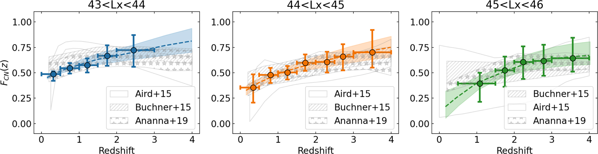
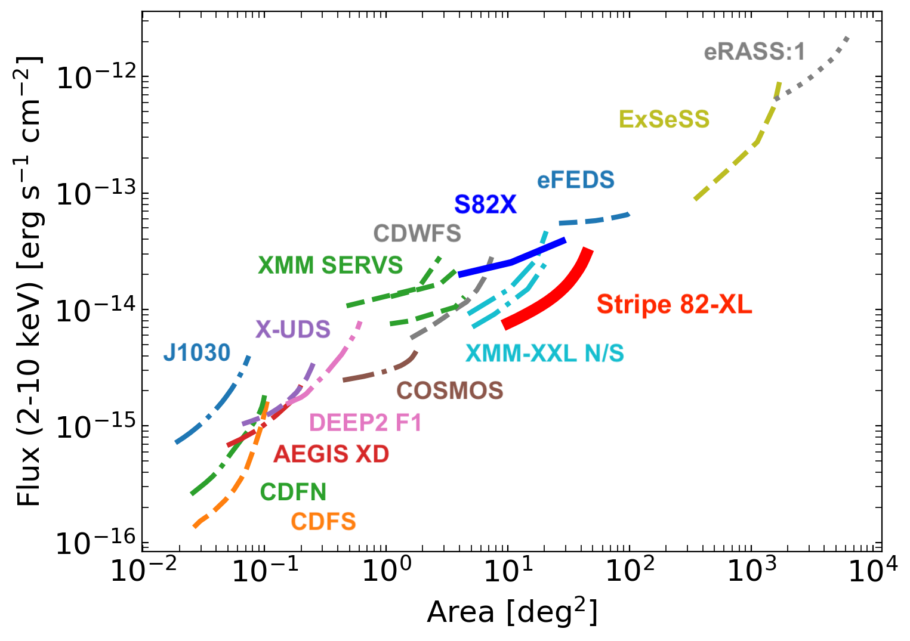
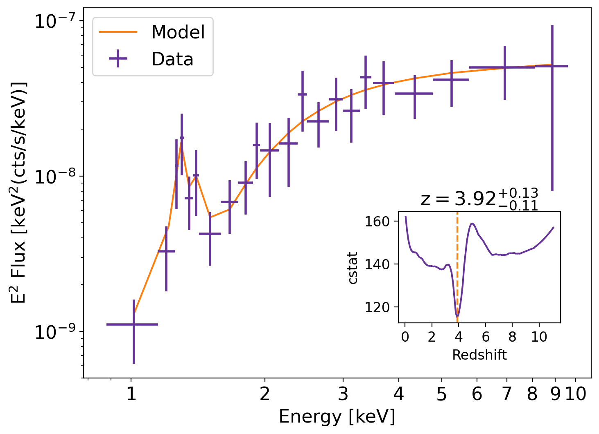
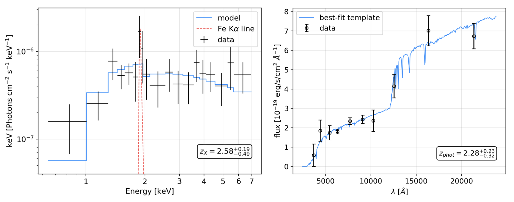

About Me
Hello there! I’m Alessandro, a postdoc at Eureka Scientific and a Laboratory Associate at Yale University. I specialize in the study and evolution of active galactic nuclei (AGN) across various large-area surveys. My work involves several key projects focused on high-luminosity, heavily obscured AGN, both at high redshifts and in nearby galaxies. My expertise spans X-ray spectral/photometric analysis, AGN/galaxy SED fitting, multi-wavelength AGN counterpart matching, and the management of large catalogs and databases. I also have a deep love for statistics, which plays a crucial role in my research.
Research
This page is still work in progress, but you can find information on my main projects here:
-
The BASS survey:
Obscuration and variability studies of nearby AGN [work in progress 🚧 ⏳]
Learn more about BASS -
Stripe 82X survey:
We have conducted a population study of X-ray AGN up to redshift 4, where we characterized AGN properties. In particular, we traced the fraction of obscured AGN and built an X-ray luminosity function that holds at high luminosities.
Below is an image showing the evolution of the obscured fraction:

You can find a useful python tool to use our X-ray luminosity function here: Tool for Number Density of AGN.
Read the full paper here: Stripe 82X Paper
Learn more about Stripe 82X -
Stripe 82-XL survey:
Using available archival data, we built Stripe 82-XL, a survey that increases the area and depth of its predecessor, making it an important contribution to the field of X-ray surveys.
Below is an example image of the S82-XL contribution to field:

Read the full paper here: Stripe 82-XL Paper
Download the Stripe 82-XL catalog here: Stripe 82-XL Catalog
Learn more about Stripe 82-XL -
X-ray redshift for the AXIS probe: We applied the Peca et al. (2021) method to estimate how many reliable redshift estimates can be obtained using AXIS X-ray spectra alone for obscured AGN in the planned intermediate and deep surveys.
Below is an example image:

Read the full paper here: AXIS white paper
Learn more about the AXIS probe -
The AGN DataBase (AGN-DB):
The AGN-Database aims to be the largest repository of all discovered AGN, at all redshifts and wavelengths (radio to X-rays) [work in progress 🚧 ⏳].
Learn more the AGN-DB project -
The J1030 Chandra deep field:
We define a method to derive reliable redshift estimates for obscured AGN using X-ray spectra alone. This method can be applied to deep X-ray surveys, especially where sources have only X-ray data and/or poor photometry.
Below is an example image:

Read the full paper here: J1030 Paper
Learn more about J1030
You can also find my work on ORCID, NASA/ADS, and Google Scholar.
Publications
First Author Papers [link]
Including Co-author Papers [link]
Contact Me
You can reach out to me via email or connect with me on social media: